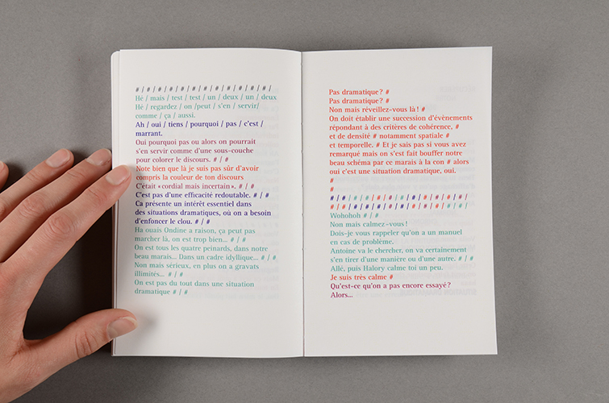
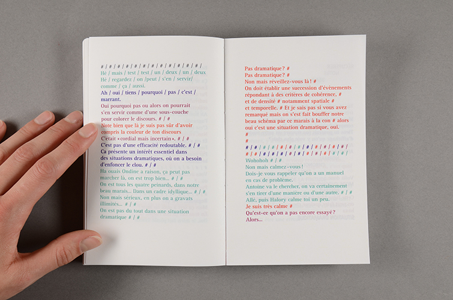

Édition
Germinal
« Si on avait la possibilité de repartir de zéro, à l'intérieur de huit mètres par dix, on ferait comment ?
Germinal met en scène quatre individus qui envisagent le plateau de théâtre comme un espace vierge dans lequel tout est à faire. De cet espace, ils font émerger un système. En étant Candide, on dirait : un Monde. L'observer se déployer nous donne l'occation de voir se construire une nouvelle histoire du langage, des savoirs, et des structures sociétales ».
Mise en page du spectacle
Germinal conçu par Antoine Defoort et Halory Goerger en 2014.

 
